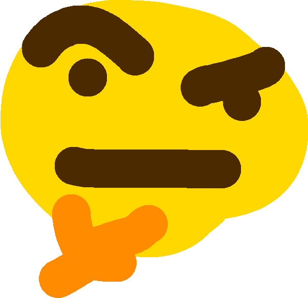

Po nieudanych próbach zabicia Śnieżki zła królowa postanowiła ją ostatecznie otruć zatrutym jabłkiem. Do wykonania tego planu przebrała się za niewinną staruszkę i zjadła zdrową część jabłka.
A tutaj jeszcze img pod spodem
